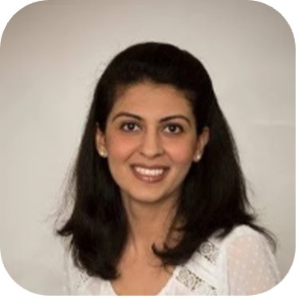
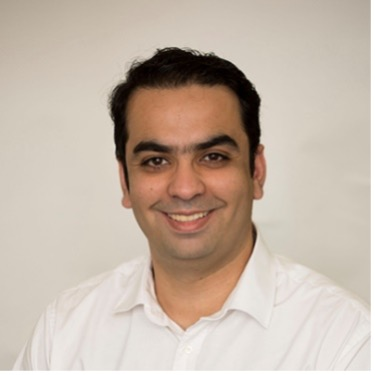
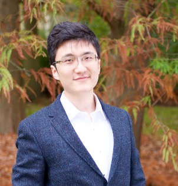
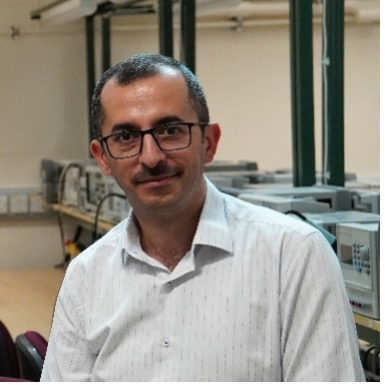
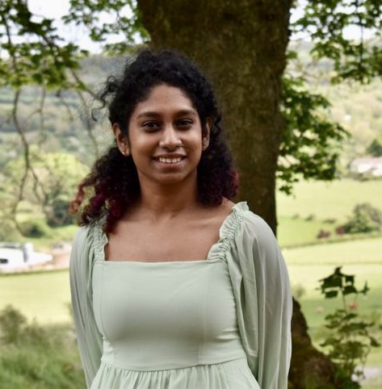

Meet ORAN-TWIN team
ORAN-TWIN brings together four different universities, Surrey, York, BCU and Leeds along with major industry
partners Toshiba Research Labs (TRL), Analog Devices (AD), Samsung UK (SM) and Virgin Media-O2 (VMO2)
together to tackle this challenge by building a network digital twin (NDT) for ORAN.
Project Leads
Dr. Mohammad Shojafar
Project Leader @University of Surrey
Bio: Mohammad Shojafar is an Associate Professor in Network Security, an Intel Innovator, a Senior IEEE member, an ACM distinguished speaker, and a Fellow of the Higher Education Academy, working in the 5G/6G Innovation Centre (5G/6GIC) at the University of Surrey, UK. Before joining 5GIC & 6GIC, he was a Senior Researcher and a Marie Curie Fellow in the SPRITZ Security and Privacy Research group at the University of Padua, Italy. He was a Senior Researcher working on a network security project (~11 months) jointly with Ryerson University and Telus Communications Inc (TELUS) in Toronto, Canada, in 2019. Also, he was a CNIT Senior Researcher at the University of Rome Tor Vergata and contributed to the 3GPPP European H2020 "SUPERFLUIDITY" project.
Dr Mohammad secured around £1.2M as PI in various EU/UK projects, including 5G Mode (funded by DSIT/UK;2023), TRACE-V2X (funded by EU/MSCA-SE;2023), AUTOTRUST (funded by ESA/EU;2021), PRISENODE (funded by EU/MSCA-IF:2019), and SDN-Sec (funded by Italian Government:2018). He was also COI of various UK/EU projects like HiPER-RAN (funded by DSIT/UK;2023), APTd5G project (funded by EPSRC/UKI-FNI:2022), ESKMARALD (funded by UK/NCSC;2022), GAUChO, S2C and SAMMClouds (funded by Italian Government;2016-2018).
He received a Ph.D. from the Sapienza University of Rome, Rome, Italy, in 2016 with an "Excellent" degree. He received the honored BSc in CS at Iran University of Science and Technology, Tehran, Iran, in 2006. He was a programmer/software analyzer at the National Iranian Oil Company (NIOC) and Tidewater Ltd in Iran from 2008 to 2013. He published over 180 refereed top-tier articles in prestigious venues such as IEEE TII, IEEE TCC, IEEE TNSM, IEEE T-ITS, IEEE Network, Computer Networks, and FGCS. He is an Associate Editor in IEEE Transactions on Network and Service Management, IEEE Transactions on Intelligent Transportation Systems, IEEE Consumer Electronics Magazine, and Computer Networks Journals. He published three books on Cybersecurity Applications and Network Security, which appeared in Springer recently.

Dr. Maryam Hafeez
Project Leader @University of Leeds
Bio: Maryam Hafeez is an Associate Professor in Communication Systems and Networks at the School of Electronic and Electrical Engineering, University of Leeds. Her main area of expertise is in spatio-temporal modelling of large-scale networks for enabling resource optimal design for communication and networking protocols. She has extensive background in exploiting Network Science concepts for the design and analysis of Intelligent Green Wireless Communication. She received her Ph.D. degree in Electrical Engineering from the University of Leeds, U.K., in 2015. From 2015-2018, she was a Research Fellow at the Institute of Robotics, Autonomous Systems and Sensing (IRASS) at the University of Leeds, U.K. She worked as a Senior Lecturer at the Department of Engineering and Technology, University of Huddersfield from 2018-2023. Her current research is funded by the EU Horizon 2020 programme and various UKRI funding schemes.

Dr. Syed Ali Zaidi
Project Co-Leader @University of Leeds
Bio: Syed Ali Zaidi is an Associate Professor at the University of Leeds in the broad area of Communication & Sensing for Robotics and Autonomous Systems. Earlier, from 2013-2015, he was associated with the SPCOM research group working on a US ARL-funded project in Network Science. From 2011 to 2013, he was associated with the International University of Rabat as a research associate. He was also a visiting research scientist at Qatar Innovations and Mobility Centre from October- December 2013, working on the QNRF-funded project QSON. He completed his Doctoral Degree at the School of Electronic and Electrical Engineering. He was awarded the G. W. and F. W. Carter Prize for best thesis and best research paper. He has published 90+ papers in leading IEEE conferences and journals. From 2014-2015, he was the editor of IEEE Communication Letters and also the lead guest editor for IET Signal Processing Journal's Special Issue on Signal Processing for Large Scale 5G Wireless Networks. He is also an editor for IET Access, Fronthaul, and Backhaul books. He is currently an Associate Technical Editor for IEEE Communication Magazine. He has been awarded COST IC0902, Royal Academy of Engineering, EPSRC, Horizon EU and DAAD grants to promote his research outputs. His current research interests are at the intersection of ICT, applied mathematics, mobile computing and embedded systems implementation. Specifically, his current research is geared towards (i) the design and implementation of communication protocols to enable various applications (rehabilitation, healthcare, manufacturing, surveillance) of future RAS and (ii) the design, implementation and control of RAS for enabling future wireless networks (e.g., autonomous deployment, management and repair of future cellular networks).
Dr. Hamed Ahmadi
Project Leader @University of York
Bio: Hamed Ahmadi is a Reader in Digital Engineering at School of Physics Engineering and Technology, University of York, UK, He is also an adjunct associate professor at the school of Electrical and Electronic Engineering, University College Dublin, Ireland. He received his Ph.D. from National University of Singapore in 2012 where he was a funded PhD student at Institute for Infocomm Research, A-STAR. Since then he worked at different academic and industrial positions in Republic of Ireland and UK. In his academic roles he has been involved in UCD Beijin Dublin International College and University of Essex partnership with Xi'an Northwest University. Dr. Ahmadi has published more than 70 peer reviewed book chapters, journal and conference papers. He is a member of editorial board of IEEE Communications Standards magazine, IEEE Systems and Springer Wireless Networks. He is a senior member of IEEE, Fellow of UK Higher Education Academy, and Networks working group co-chair and a management committee member of COST Actions CA20120 (INTERACT) and CA15104 (IRACON). His current research interests include design, analysis, and optimization of wireless communications networks, Digital Twins, airborne networks, wireless network virtualization, blockchain, Internet-of-Things, cognitive radio networks, and the application of machine learning in small cell and self-organizing networks.

Dr. De Mi
Project Leader @Birmingham City University
Bio: De Mi is an Associate Professor in future communication systems and the Head of the Future Information Networks (FINET) Research Cluster with the College of Computing at Birmingham City University (BCU). He received the B.Eng. degree from the Beijing Institute of Technology, China, the M.Sc. degree from the Imperial College London and the Ph.D. degree from the University of Surrey, U.K. Prior to joining BCU in 2023, he worked with the Institute for Communication Systems at the University of Surrey. He has been a visiting professor at various universities and institutes, e.g., Shanghai Jiao Tong University, Shenzhen Institute of Information Technology and Zhengzhou University, China. He was the co-recipient of the IEEE Broadcast Technology Society 2020 Scott Helt Memorial Award (Best Paper), IEEE UCET 2020, IECON 2023, BSS 2023 and Ucom 2024 best paper awards. He is a Senior Member of IEEE. He serves as an editor/guest editor e.g. for IEEE Network, China Communications, Journal of Communications and Networks, and a publicity/symposium/session/workshop co-chair for various conferences, e.g., IEEE MECOM 24, ICIT 24, ICRA 24, WCCI 24, ICC, GLOBECOM, VTC, WCNC etc. His research interests and expertise span a range of areas in wireless communications and signal processing, including B5G/6G radio access techniques, hypercomplex signal processing, next-generation broadcast and multicast communications and future open networks.
Researcher Team
Zhizhou He, Research Fellow @University of Surrey
Bio:Zhizhou He received the PhD degree from the University of Surrey in 2024.
He is currently a research fellow of ORAN TWIN project at the University of Surrey.
His research is focusing on the fields of ORAN, digital twin, and AI.
Mona Akbari Kohnehsari, Research Assistant @University of Surrey
Bio:Mona received her master’s degree in 5G and Future Generation Systems from the University of Surrey in 2024.
She is currently a research assistant in Network Security at ORAN TWIN, University of Surrey. Her research focuses on the application of AI techniques, Digital Twins, and ORAN.
Abdelaziz Salama, Research Fellow @University of Leeds
Bio:Abdelaziz Salama received his PhD from the University of Leeds in 2024. His research interests include distributed learning, autonomous systems, and sensing. He worked as a Research Fellow on a UKRI-funded project. He focused on designing an efficient communication system for robots operating in underground and sewer pipes, ensuring reliable connectivity between the robots and with above-ground control operations. He is currently a research fellow on the ORAN TWIN project at the University of Leeds, focusing on ORAN and digital twin technology and their applications in network optimisation, wireless communication systems, and edge computing.

Mohammed M. H. Qazzaz, Research Assistant @University of Leeds
Bio:Mohammed M. H. Qazzaz is an accomplished academic and researcher who earned his BSc and MSc in Electronics and Communication Engineering from Mosul University, Iraq, in 2010 and 2013, respectively. He is pursuing a PhD at the University of Leeds, UK, with a research focus on Wireless Communications, UAV Communications, Artificial Intelligence / Machine Learning, and Radio Access Networks (RANs). Prior to his doctoral studies, he served as an assistant lecturer at the Communication Engineering School, Ninevah University, Iraq, from January 2017 to January 2022, where he shared his knowledge and expertise. He also brings seven years of practical experience from the telecommunications industry, working with local and international vendors and operators in various roles.

Swarna B. Chetty, Research Fellow @University of York
Bio:Swarna B. Chetty received the B.E. degree in electronics and communication engineering from Sathyabama University, Chennai, India, in 2014, the M.S. degree in mobile communication systems from the University of Surrey, U.K., in 2016, and the Ph.D. degree from University College Dublin, Ireland, in 2023. Prior to her doctoral studies, she gained professional expertise as a Software Developer. She is currently a Research Associate with the University of York, actively contributing to the YO-RAN Project. Her research interests include network virtualization, resource allocations, microservices, machine learning (especially reinforcement and deep learning), open radio network access, 5G, and beyond communications.
Haitham Hassan Mahmoud, Research Fellow @Birmingham City University
Bio:Dr. Haitham Mahmoud is a research fellow in the Future Communication Systems research group at BCU. He has made significant contributions to numerous funded projects as a highly effective research coordinator and dedicated research assistant. Moreover, he has also served as a Teaching Assistant and Assistant Lecturer at The British University in Egypt for four years. Furthermore, he is an accomplished author, having published numerous peer-reviewed articles in prestigious journals and conferences, and has reviewed over 150 manuscripts in IEEE magazines, IEEE transactions, MDPI, and others.
Industrial Partners